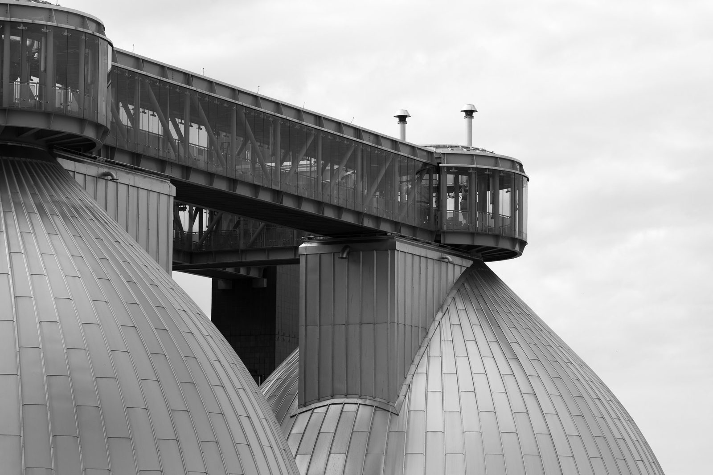
{kind=link}
The neighborhood across the creek. Greenpoint is a 15-minute walk from Hunters Point over the Pulaski Bridge, and it has the story LIC never quite had: shipyards that built the Union's ironclad, a pencil company that branded an entire district, an oil spill three times the size of the Exxon Valdez sitting under the streets, and a Polish community that has held Manhattan Avenue for a century.
The name is literal. Green Point was a grassy spit on the East River at the mouth of Newtown Creek, farmland until Neziah Bliss, a steamboat builder, bought it in 1832 and laid out streets. By the 1850s Manhattan's shipyards were moving here, and by 1880 Greenpoint had glassworks, iron foundries, breweries, potteries, rope walks and fifty oil refineries. Everything on this walk is what those industries left behind.
Getting there
From LIC, walk. The Pulaski Bridge has a protected bike and pedestrian lane on the west side; from Center Boulevard take 50th Avenue east to 11th Street and you are on the ramp in ten minutes. By subway, the G to Greenpoint Avenue puts you at stop 4; start there and do the bridge and the creek last. The walk ends at McCarren Park, two blocks from Bedford Avenue (L) or Nassau Avenue (G).
Why this walk matters
Greenpoint is the neighborhood New York used and then ignored. The Monitor was built here and there is a plaque and an unfunded museum. The oil under the eastern blocks was noticed in 1950, confirmed in 1978, and not seriously pumped until the 1990s. The largest rope factory in the country burned in one day in 2006 while a landmarking application sat in a drawer. What survived did so because Greenpoint stayed too Polish, too industrial and too far from a subway to be worth demolishing until about 2010.
The other theme is water. This walk starts on a creek that was once the busiest small waterway in the world and ends on an inlet where a warship was launched. In between it passes a sewage plant, a former ferry slip, a radio site chosen because marshland carries a signal, and a swimming pool built for 75,000 people who had no other way to get near clean water.
Map
Timeline: 190 years in 3 miles
Industrial Greenpoint runs from a steamboat man in 1832 to a fire in 2006. The parks at both ends of the walk are the last chapter.
A steamboat engine builder lays out the street grid and starts a ferry to Manhattan.
A dozen firms move over from Manhattan. Only the Clyde in Scotland builds more ships.
Whale oil first, then petroleum. Fifty refineries by 1870.
Built in 101 days at Continental Iron Works and slid into Bushwick Inlet on January 30.
After a fire in Manhattan. It stays 84 years.
Model housing for Astral Oil workers, on a full block of Franklin Street.
Parishioners wrap the copper on the onion domes themselves after the Tsar's money stops.
One of eleven WPA pools that summer. LaGuardia dedicates it before 75,000 people.
Two 304-foot towers on the old ferry site broadcast the city's radio station until 1990.
Manhole covers fly three stories. Nobody connects it to the oil underground.
The pencil company had left in 1956; Mobil stops refining in 1966.
A helicopter sees a sheen off Meeker Avenue. The plume underneath is 17 to 30 million gallons.
It sits empty for 28 years, hosting concerts in its final abandoned summers.
A ten-alarm fire on West Street, 350 firefighters, arson suspected, landmarking pending.
The waterfront and the park both come back within months of each other.
After roughly $350 million in land buys, the Monitor site becomes a park.
The stops
1Pulaski Bridge
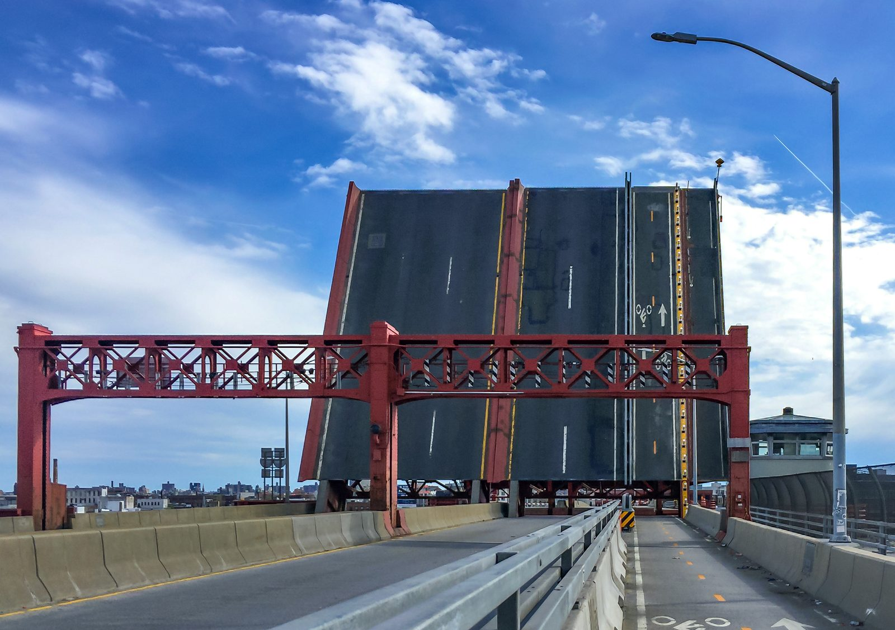
{kind=link}
The bridge opened on September 10, 1954, and three hours later the city closed the Vernon Avenue Bridge two blocks west, which had connected Manhattan Avenue to Vernon Boulevard since 1882 and was demolished within months. The G train still runs underneath that old alignment in the Greenpoint Tube, the only subway crossing of the creek. The bridge is named for Casimir Pulaski, the Polish cavalry general killed at Savannah in 1779, a nod to the neighborhood on the far side. The draw span still opens for barges.
Look down. Newtown Creek was a tidal marsh that became, by one 19th-century estimate, the busiest waterway of its size on earth, carrying more freight than the Mississippi. It is now a federal Superfund site, one of three in the city, and the boundary between Queens and Brooklyn for its whole length.
2Newtown Creek Nature Walk
The eight stainless-steel eggs are sludge digesters at the Newtown Creek plant, the largest of the city's fourteen, treating 18 percent of New York's wastewater from a million residents. The plant opened in 1967; the eggs came with a $5 billion upgrade begun in 1998. The nature walk beside them, by the artist George Trakas, opened in 2007 with a 170-foot concrete "vessel" shaped like the hulls once built on this shore, granite steps etched with Lenape place names, and native plantings along Whale Creek.
What the walk cannot show is under your feet. Kerosene refining started on this creek in 1854, and by 1892 most of the fifty refineries had been folded into Standard Oil. On October 5, 1950 a sewer exploded on Manhattan Avenue, throwing manhole covers three stories into the air. On September 2, 1978 a Coast Guard helicopter saw oil seeping from a bulkhead at the foot of Meeker Avenue. The investigation found a plume of 17 million gallons across 52 acres; the EPA later revised it to as much as 30 million gallons over 100 acres, three times the Exxon Valdez. Pumps have been running since 1979 and have recovered about 13 million gallons so far, along with nearly 8 billion gallons of groundwater.
3McGolrick Park
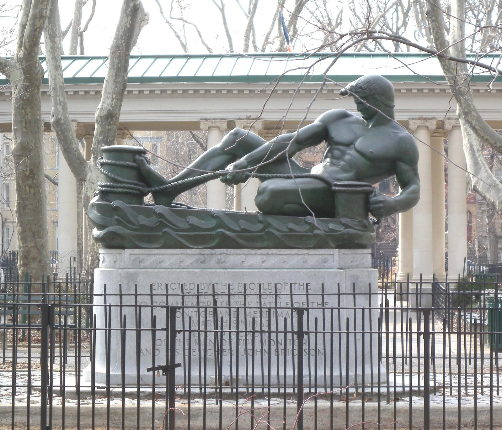
{kind=link}
Laid out as Winthrop Park and renamed in 1941 for the pastor of St Cecilia's. The crescent-shaped shelter pavilion is from 1910 by Helmle and Huberty, who also did the Greenpoint Savings Bank. The bronze on the Monitor Street side, by Antonio de Filippo, was dedicated in 1938 to John Ericsson, the Swedish engineer who designed the Monitor, and to the ship itself: a sailor hauling a line, with the low turret behind him. This is the state's official memorial to the ship, twelve blocks from where it was built.
4St Anthony of Padua
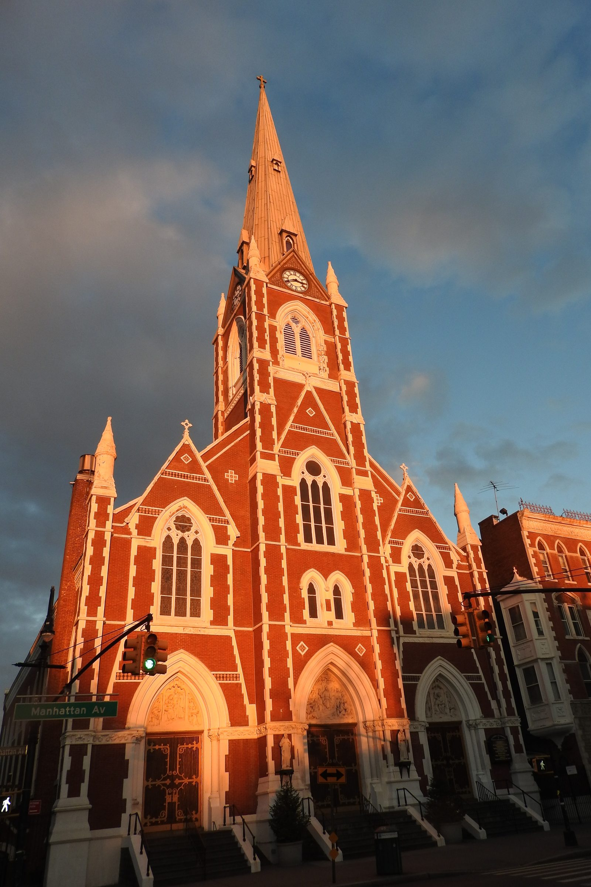
{kind=link}
The parish was founded in 1873 and the church went up in 1875 to a design by Patrick Keely, the Irish-born architect who built some 600 Catholic churches in North America. The steeple is 240 feet and the church is set at an angle so it closes the view down Milton Street. St Anthony's became the center of Polish Greenpoint: Polish masses every Sunday, Polish taught in the school, and a spine of Polish delis, bakeries and travel agencies along Manhattan Avenue between here and Nassau Avenue that is thinner than it was in 1990 but still there.
5Milton Street
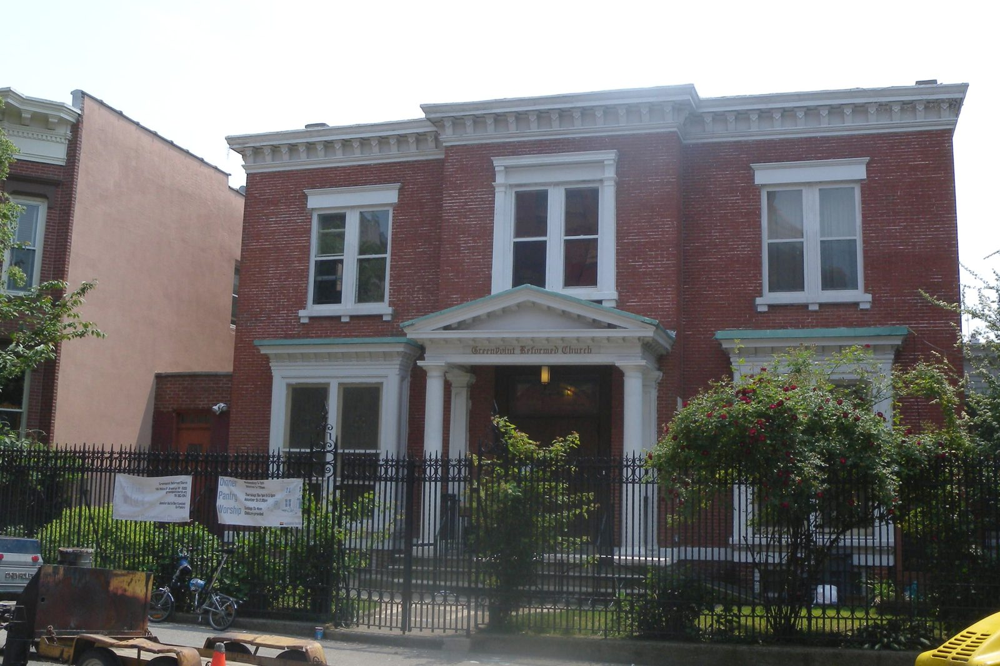
{kind=link}
The Greenpoint Historic District, designated 1982, runs from here to Kent Street and along Franklin. Milton is the best block: brick and brownstone rows from the 1860s to 1880s built for shipyard owners and skilled workers, plus four churches on one street. The Greenpoint Reformed Church at 136 is an 1867 Italianate villa converted in 1891; St John's Lutheran at 155 is 1892. On Kent Street, No. 101 was built in 1867 by a shipwright named John Connolly and No. 99 by him in 1870. The Church of the Ascension on Kent was paid for partly by Thomas Fitch Rowland, owner of Continental Iron Works.
6Astral Apartments
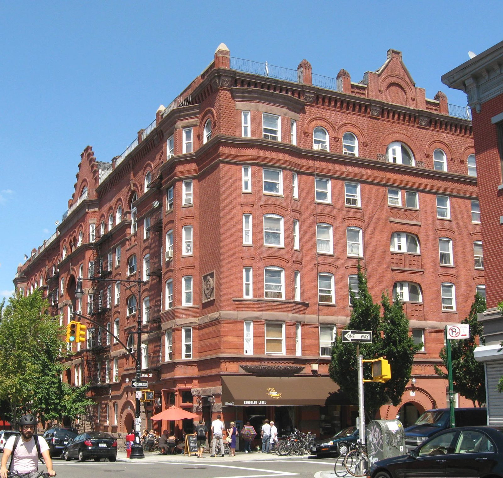
{kind=link}
Charles Pratt made his fortune in kerosene. His Astral Oil Works in Williamsburg sold under the slogan that the holy lamps of Tibet were primed with Astral Oil, and in 1874 he merged with Rockefeller's Standard Oil. In 1886 he built this full-block Queen Anne apartment house, 95 units in brick and terracotta with a central courtyard for light and air, as model housing for his workers, following the philanthropic housing ideas of Peabody in London. He also founded Pratt Institute the following year. By local legend Mae West was born here in 1893, though the claim is disputed.
7Eberhard Faber Pencil Factory
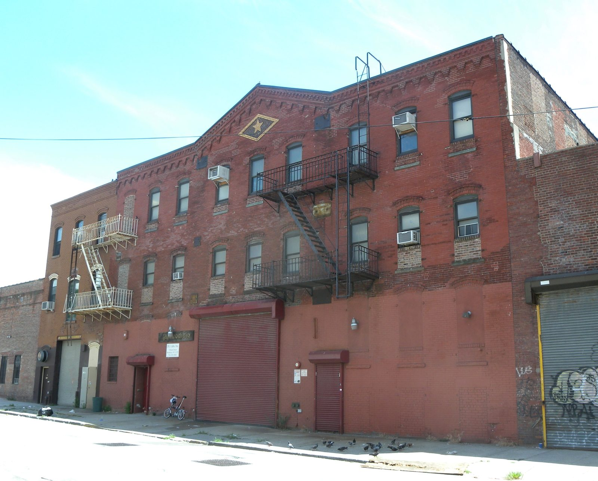
{kind=link}
Eberhard Faber, from the Bavarian pencil family, opened in Manhattan in 1861 and moved here in 1872 after a fire. The complex grew over two blocks and employed hundreds, mostly women, making cheap pencils, pen holders and erasers; the Greenpoint plant was the oldest pencil factory in America. The star-in-diamond on the parapets was trademarked in 1861 and put on every building as an early exercise in corporate branding. The 1923 building on Greenpoint Avenue has huge glazed terracotta pencils on the facade aimed at the ferry passengers. The company left for Pennsylvania in 1956. Eight buildings and one freestanding wall were made a historic district in 2007.
8WNYC Transmitter Park
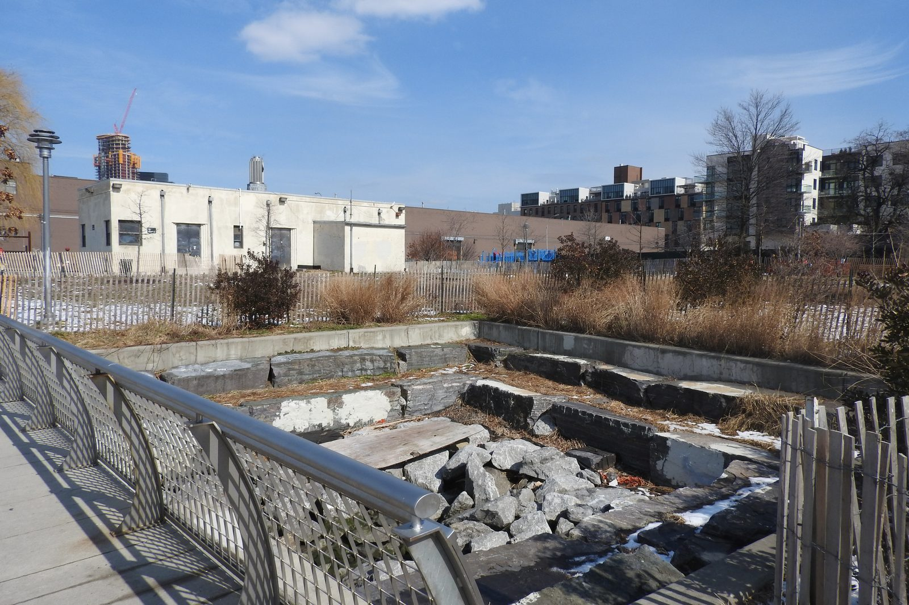
{kind=link}
This was the Greenpoint ferry slip from 1853 to 1933, with boats to 10th, 14th and 23rd Streets in Manhattan. In 1934 the city's radio station WNYC, broadcasting from the Municipal Building since 1924, was losing its signal to new skyscrapers and LaGuardia considered shutting it. A committee found this site instead: low buildings and marsh, ideal for AM transmission. Two 304-foot towers went up with WPA money and the transmitter was dedicated on October 31, 1937, with police, fire and sanitation bands playing live. The towers came down after the station moved to the Meadowlands in 1990. The park opened in 2012 with the Art Deco transmitter building kept, the ferry slip excavated as a tidal wetland, and a pier at the end of Kent Street.
9Greenpoint Terminal Market
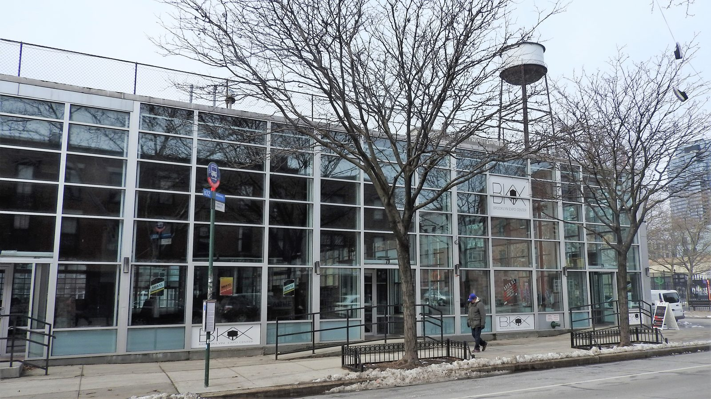
{kind=link}
The American Manufacturing Company was the largest rope maker in the country and Brooklyn's second largest industrial employer, with 16 buildings between West Street and the river. In 1910 its women workers fought a pitched battle with police during a strike. Industry left in the 1980s and the complex became squatter territory, nicknamed the Forgotten City. Preservationists were pushing for landmark status when, before dawn on May 2, 2006, a fire started that spread to ten alarms and drew 350 firefighters, the largest response since the St George Hotel in 1995. Fifteen buildings were gutted; arson was suspected. Fire marshals found records of at least four earlier arson fires at properties linked to the owner, Joshua Guttman. He was never charged.
10Bushwick Inlet, the Monitor site
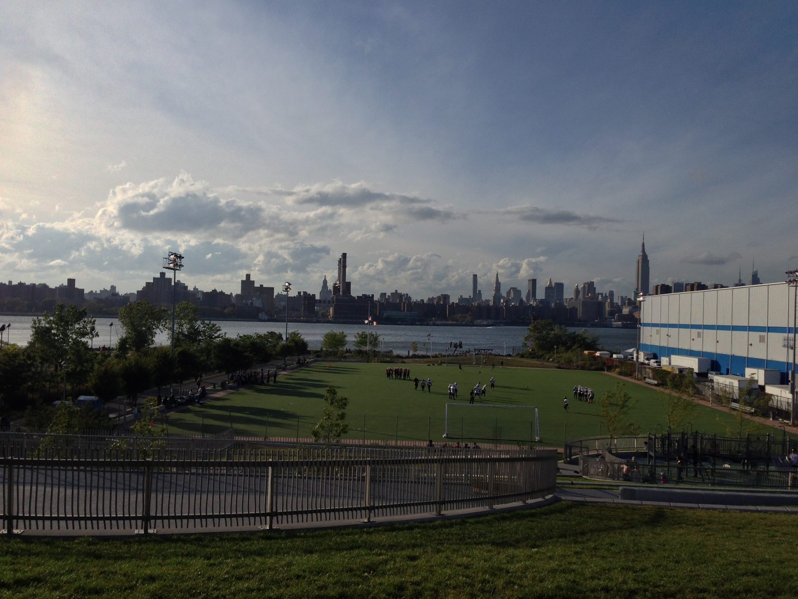
{kind=link}
Continental Iron Works set up on the inlet in 1851 and by 1859 was one of the few American yards that could build an iron hull. When the war started its owner Thomas Rowland went to Washington to argue for ironclads and was turned down. That fall the Navy gave John Ericsson a contract with a 100-day deadline; Ericsson signed Continental on October 25, 1861. The Monitor was built in 101 days and launched into this inlet on January 30, 1862, a flat raft with a revolving turret that the papers called a cheesebox on a raft. Six weeks later at Hampton Roads it fought the Confederate ironclad Virginia to a draw and ended the age of wooden warships. Continental built six more monitors here.
A Monitor museum was promised in 2005 with half a million dollars for planning; nothing has been built. The city has spent about $350 million buying the land for Bushwick Inlet Park since the 2005 rezoning and opened the first pieces in 2016.
11Cathedral of the Transfiguration
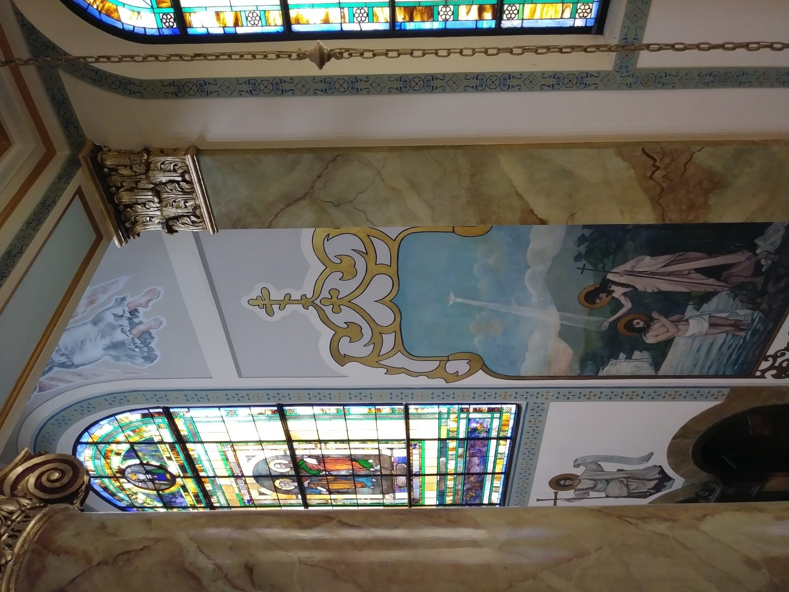
{kind=link}
Brooklyn's Russian Orthodox community outgrew a converted Methodist church on North 5th Street and in 1915 bought five lots from the estate of Zachary Taylor, a Greenpoint iron founder who did casting for Edison. Louis Allmendinger, architect of the Mathews Flats in Ridgewood, modeled it on the Dormition Cathedral in the Kremlin. Then the Tsar, who had funded Orthodox missions worldwide at nearly a million dollars a year, was overthrown in 1917 and the money stopped mid-construction. The parishioners sold the old church to finish the walls, carried the iconostasis over by hand, and in spring 1921 climbed onto the roof and wrapped the five bare cupolas in copper themselves. The uneven seams are still visible.
12McCarren Park Pool
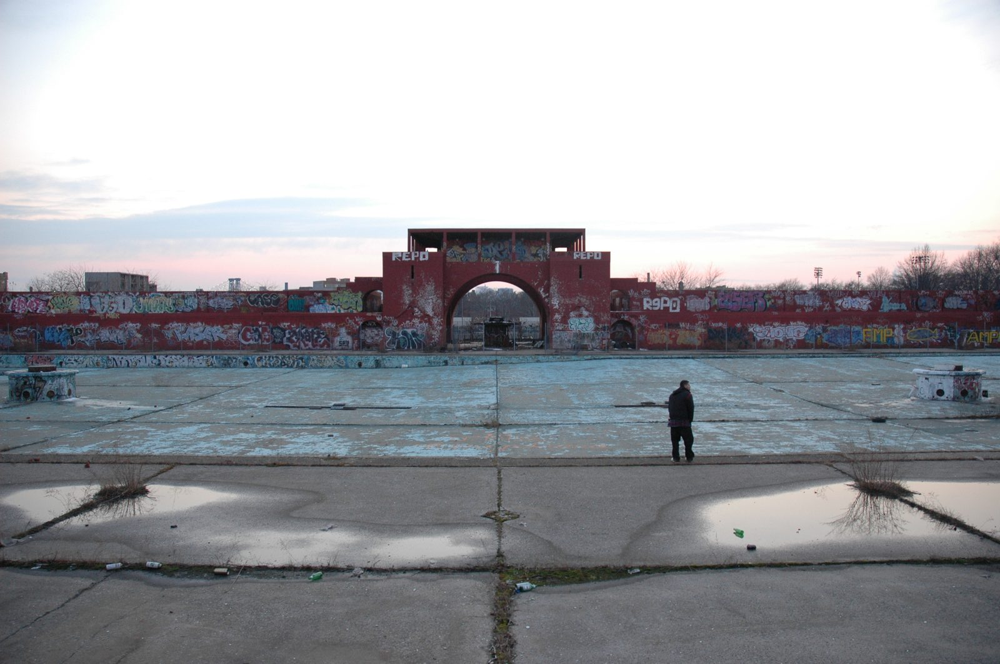
{kind=link}
One of eleven WPA pools that opened across the city in the summer of 1936, dedicated by LaGuardia on July 31 before 75,000 people from Greenpoint and Williamsburg. The Olympic-sized pool and its brick bathhouse with the great entry arch were built for a neighborhood where the river was an oil terminal and nobody could swim in it. It closed in 1984, too deteriorated to fix, and sat empty for 28 years, in its last abandoned summers hosting concerts and dodgeball on the cracked floor. Rogers Marvel restored it under PlaNYC and it reopened in 2012 for 1,500 swimmers, with a year-round recreation center and an ice rink on the old plaza.
Eat and drink: Polish Greenpoint and what came after
Manhattan Avenue is one of the last streets in the city where a neighborhood's food is still mostly run by the people who built it. Some of the old places have gone in the last decade, Goodman's on Nassau Avenue after 83 years in 2016 and Christina's in 2025, but the core is intact.
- Peter Pan Donut and Pastry Shop 727 Manhattan Ave, between stops 4 and 5 · since 1953
Opened by an Italian couple, run by the Siafakas family since 1993. Formica counter, green uniforms, hand-painted price board, Polish spoken behind the counter. Go early; the crullers sell out. - Polish National Home / Warsaw 261 Driggs Ave, near stop 11 · since 1904
A Dutch bar and bowling alley bought by Polish societies in 1904, with a 1914 concert hall that holds 1,000. Punk and hip-hop shows through Live Nation pay for the Saturday Polish dances that have run since the beginning. The Warsaw Bistro window sells pierogi and kielbasa during shows. - Karczma 136 Greenpoint Ave, near stop 7 · since 2008
The reliable Polish restaurant: pierogi, bigos, hunter's stew, in a room done up as a country inn. Its owner took over Christina's in 2025 and reopened it as Retro Polish at 853 Manhattan Ave. - Bakery Rzeszowska 948 Manhattan Ave, north end · 1990s
One of the last Polish bakeries on the avenue. Paczki, babka, poppy-seed roll. Cash. - Five Leaves 18 Bedford Ave, at McCarren Park, stop 12 · since 2008
The restaurant that marked the neighborhood's turn. Heath Ledger was a founding investor and it opened months after his death. Still the best breakfast on the park. - Paulie Gee's 60 Greenpoint Ave, near stop 7 · since 2010
Wood-fired pizza in a room built to look older than it is. The Hellboy with hot honey started here. - Frankel's Delicatessen 631 Manhattan Ave, near stop 4 · since 2016
Two brothers bringing Jewish deli back to a neighborhood that once had it. Pastrami, egg and cheese on a bagel.
After
To get home, the G to Court Square or the ferry from India Street to Long Island City, which passes the Monitor site and the Pepsi sign.